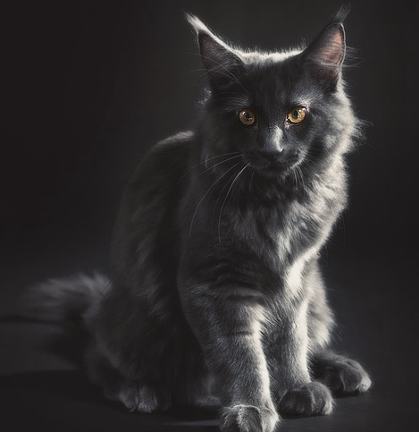
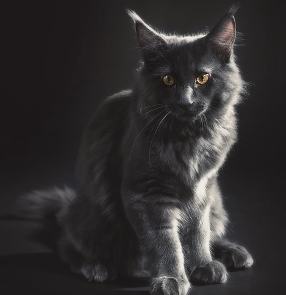

Питомцы
Все представители нашего питомника имеют ветеринарный паспорт с отметками о прививках и документ с родословной
 


Особенности породы
Мейн-Кун - это порода, которая вызывает к себе уважение. Приобретая в свой дом этого питомца, вы получите умное животное, которому нет равных
- Легко уживается в семьях с детьми или другими животными
- Выполняет команды как дрессированная собака
- Вес может достигать 12кг, а длина 1м
- Внешний вид этой кошки похож на дикую рысь
Почему именно мы?
Приобретая животное в нашем питомнике, вы получите нашу гарантированную поддержку
-
Бесплатное ветеринарное обслуживание 5 лет
-

Консультирование по любому вопросу 24 часа в сутки
-

Индивидуальный подбор питания для вашего кота
Об уходе за Мейн-Куном
-
Шерсть
Мы разработали 8 правил, следуя которым, шерсть вашего кота всегда будет блестящей, мягкой и послушной
-
Когти
Нужно ли стричь когти? Это мы и выясним, плюс ко всему расскажем как подобрать идеальную когтеточку
-
Уши и глаза
Владельцам котов необходимо регулярно осматривать ушки и глаза своих питомцев, ведь это может быть признаками заболевания
-
Питание
В нашем питомнике существует два подхода: натуральное питание и питание промышленными кормами, но выбирать только вам
Наша команда
Все сотрудники нашего питомника дипломированые специалисты в области фелинологии и ветеринарии

Серёжа Попов
Основатель питомника
Наш питомник занимается разведением Мейн-Кунов на протяжении 15 лет. Мы в ответе за каждого приобретенного вами питомца